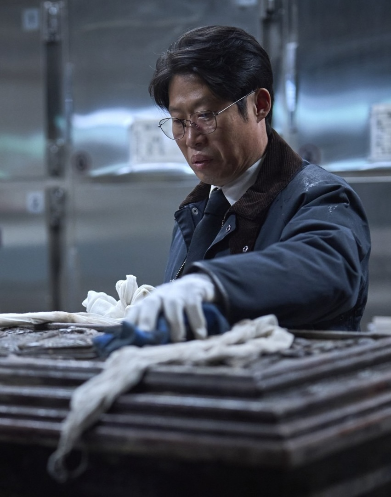
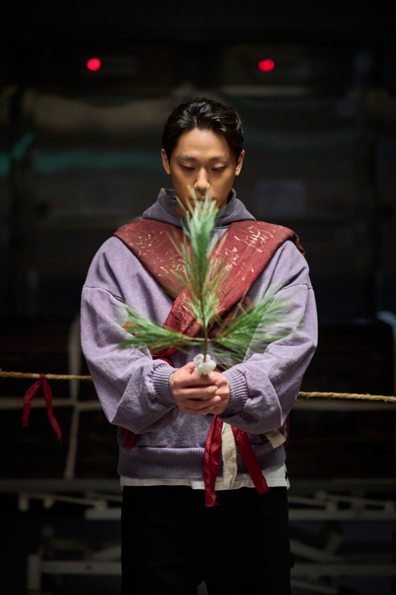

등장인물
김상덕 (최민식)
국내 최고의 지관(풍수사)
어지간한 기업 회장도 굽신댈 만큼 높은 입지와 평판을 가진 지관으로, 화림이 가져온 의뢰를 접수한 뒤 묫자리를 살펴보고는 불길함을 느껴 거절하려고 하지만 결국은 맡기로 결정한다.
이화림 (김고은)
젊은 나이에도 용하다고 소문이 난 무당
사건의 발단이 된 의뢰를 처음 받은 인물로, 문제의 원인이 묫바람이라는 것을 간파하고 이장(移葬)을 제안하면서 묘 관련 일에 능한 상덕, 영근과 함께하게 된다.

고영근 (유해진)
지관 김상덕과 함께 일하는 장의사
대한민국 명인 인증을 받았고 방송 출연도 여러 번 해서 세간에 꽤나 알려진 인물. '의열 장의사'란 사무실을 운영하며 김상덕과 꽤나 오랫동안 일을 같이 해 와 막역하다.

윤봉길 (이도현)
무당 이화림과 함께 활동하는 법사
굿판에서 북을 치는 악사이자 경문을 읊는 법사이면서 귀신을 몸에 받는 신주 노릇도 할 수 있다. 네 주역 중 가장 젊고 경력이 짧다. 화림을 '선생님'이라 부르는 사제 지간으로, 신어머니-신아들 관계이지만 나이 차가 크지 않아 남매같다.